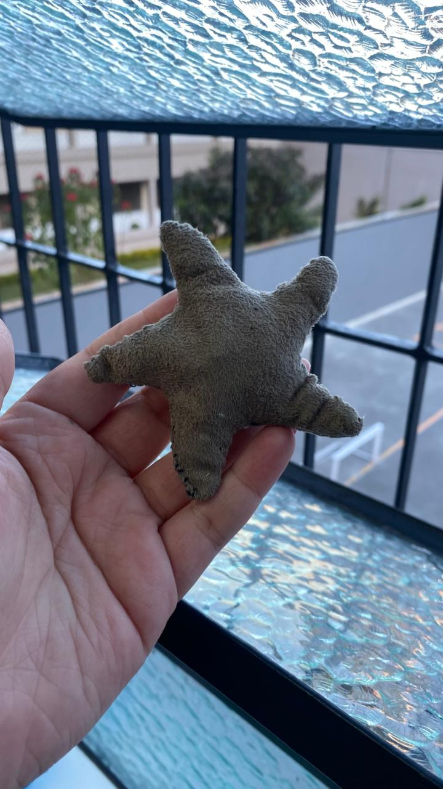
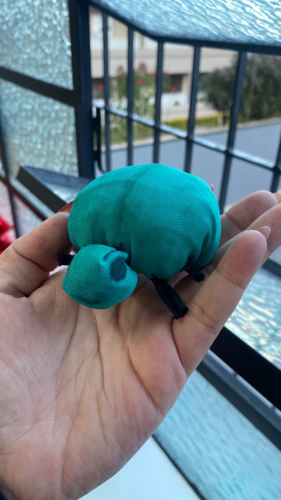
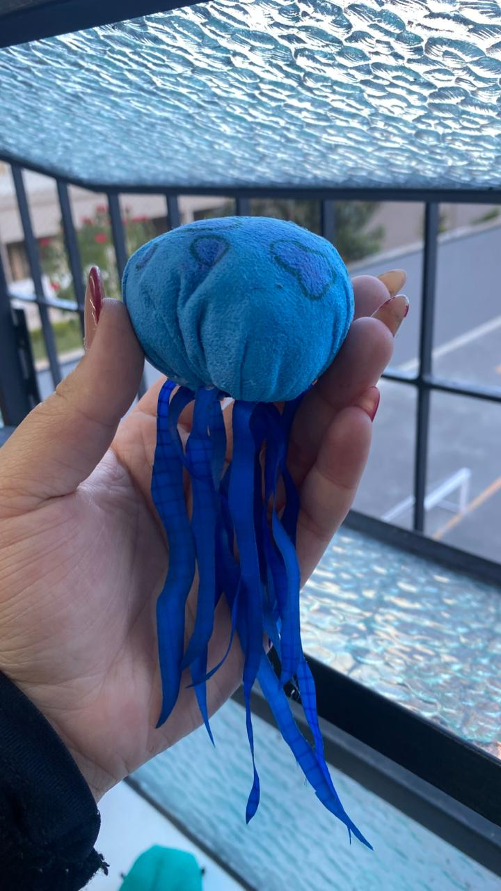
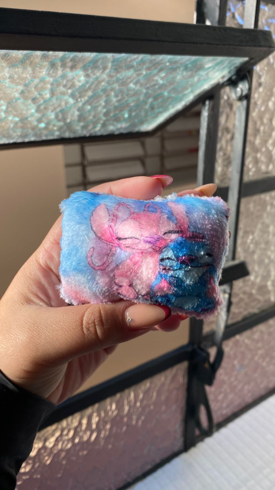
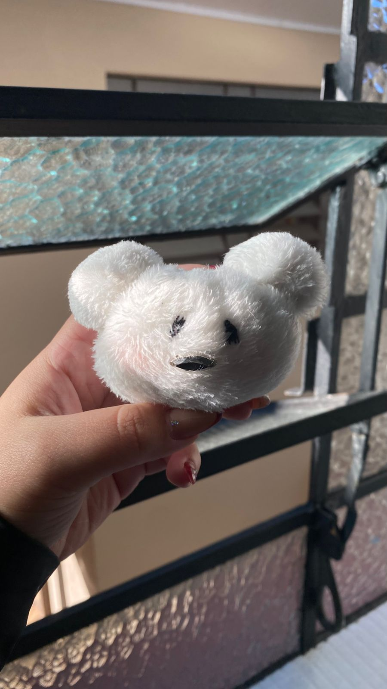

O que é o ReTecer?
O ReTecer é um projeto que transforma retalhos de roupas e tecidos usados em lindos bichinhos de pelúcia feitos à mão. O objetivo é dar uma nova vida ao que seria descartado e espalhar amor, criatividade e sustentabilidade.
Como Funciona
- Recebemos doações de roupas e tecidos
- Selecionamos os melhores materiais
- Costuramos os bichinhos com carinho
- Distribuímos ou vendemos para apoiar o projeto
Nossos Bichinhos





Aromas
Além do visual encantador dos nossos bichinhos, eles também carregam aromas que trazem bem-estar e aconchego.
- Lavanda: conhecida por seu efeito calmante, ajuda a reduzir o estresse e a ansiedade. Perfeita para proporcionar uma sensação de tranquilidade.
- Hortelã com pimenta: refrescante e energizante, esse aroma ajuda na concentração e alívio de dores leves. Ideal para revigorar o ambiente.
Como Ajudar
- Doe os retalhos ou roupas usadas
- Divulgue o projeto nas redes
- Adote um dos nossos bichinhos
Fale com a gente
Envie um e-mail para contato.retecer@gmail.com ou mande uma mensagem no nosso Instagram: @retecer2025